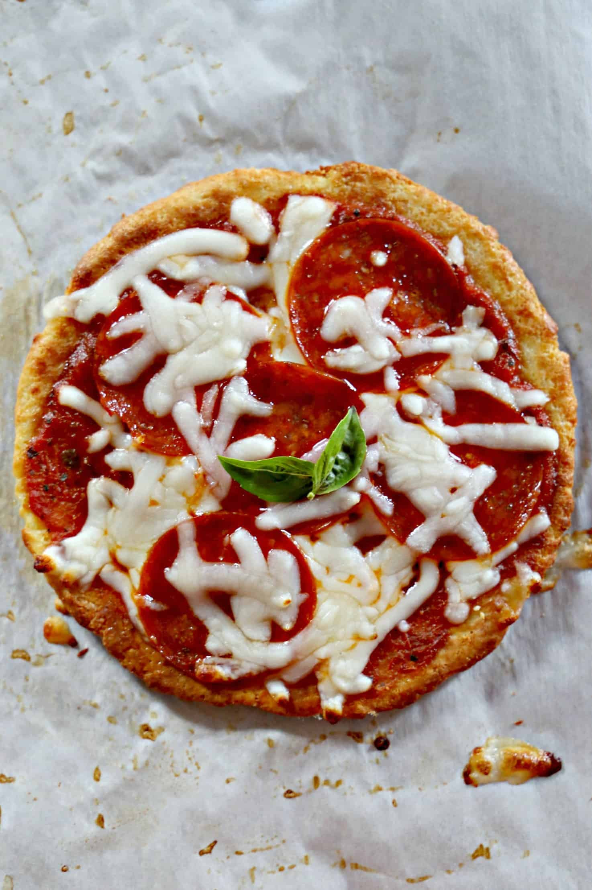

Pizza

images source
Description
This Quick and Easy Personal Pizza is going to change your dieting world. It's easy to make, low-carb, and
delicious!
Ingredients
Crust
- ⅓ cup shredded mozzarella cheese
- ¼ cup blanched almond flour
- ⅛ teaspoon garlic powder
- Pinch of salt
- 1 large egg yolk
Toppings
- 1 ½ tablespoons no-sugar added pizza sauce
- ¼ cup shredded mozzarella cheese
- 5 slices pepperoni
- ¼ teaspoon Italian seasoning
Steps
-
Place an oven rack in top position. Preheat the oven to 425 degrees.
-
Make the crust: In a microwave-safe bowl, combine the mozzarella cheese, almond flour, garlic powder, and
salt and stir until well blended. Microwave for 25 seconds.
-
Knead the dough with your hands for a few seconds. Add the egg yolk while the dough is still warm. Knead
until combined and roll into a ball. Form a disk as if you were making a hamburger patty. Place the dough on
a parchment-lined baking sheet and use your hands to press into a circle 5 to 6 inches in diameter and about
¼ inch thick (or use a rolling pin). If the dough cools too much for form properly, place it back in the
microwave for 10 seconds.
-
Use a fork to poke holes in several places throughout the crust before baking. Bake on the top rack for 8 to
10 minutes, until the crust is golden brown.
-
Remove the crust from the oven and flip it over. Top the flatter side with the pizza sauce and sprinkle with
half of the cheese. Next, add the pepperoni slices, then sprinkle with the remaining cheese. Bake for
another 3 to 4 minutes, until the cheese is melted.
-
Sprinkle the pizza with Italian seasoning before serving.
back